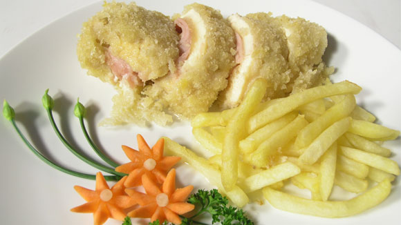

Ức gà nhồi phô mai

- Khẩu phần 2
- Chuẩn bị 15 phút
- Thực hiện 20 phút
Nguyên liệu
- 200g phi lê ức gà (1 cái)
- 50g phô mai Gourdar
- 25g Jambon (1 lát)
- 1 củ hành tây
- Bột chiên giòn
- Bột thính bánh mì
- Gia vị: Hạt nêm từ Thịt Thăn, Xương Ống và
Tủy - Bổ sung Vitamin A, muối, tiêu và tương cà chua.
- 1 ít salad trang trí
- 1 củ khoai tây
Hướng dẫn thực hiện
- Dùng dao nhọn rọc giữa ức gà (chú ý không làm rách). Sau đó, ướp gia vị:
1 muỗng Hạt nêm từ Thịt Thăn, Xương Ống và Tủy - Bổ sung Vitamin A + ½
muỗng muối + ½ muỗng tiêu, để thấm khỏang 15 phút.
- Thái phô mai thành từng miếng dài 5cm.
- Khoai tây cắt sợi chiên vàng. Hành tây cũng thái sợi.
- Khuấy bột chiên giòn với 1 ít nước.
- Nhồi phô mai, jambon, hành tây vào giữa ức gà, chỗ đường rạch khi nãy.
Sau đó, dùng tăm tre xuyên cho kín lại để khi chiên phô mai không bị xì ra
ngòai.
- Nhúng ức gà vào bột chiên giòn rồi phủ qua bột thính bánh mì cho đều.
- Chuẩn bị chảo dầu nóng, cho ức gà vào chiên chín vàng. Sau đó, vớt ra để
ráo dầu để khi ăn không bị ngán.
- Salad xếp ra dĩa, xắt ức gà thành từng lát dày tùy ý.
- Dùng với khoai tây chiên và tương cà.